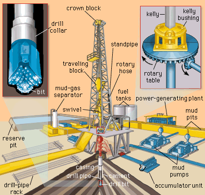

Drilling Column (Drill String)

A Drilling Column or Drill String is the long, steel pipe assembly used in oil and gas drilling to rotate the drill bit and circulate drilling fluid to the bottom of the well. It connects the surface drilling rig to the bottom hole assembly (BHA).
Main Components of the Drilling Column:
- Drill Bit: Located at the very bottom of the drilling column.
Purpose: Breaks and crushes the formation rock.
Types:
- Roller cone bit
- PDC (polycrystalline diamond compact) bit
- Diamond bit (for hard formations)
- Bottom Hole Assembly (BHA):
- Drill Collars: Thick, heavy-walled pipes that add weight to the bit (WOB). Provide stability and help keep the wellbore straight.
- Stabilizers: Centralize the drill string in the hole. Prevent vibration and improve directional control.
- Mud Motors / Rotary Steerable Systems: Used in directional drilling. Help steer the wellbore without rotating the entire drill string.
- Heavy Weight Drill Pipe (HWDP): Transitional pipe between the heavy BHA and the lighter drill pipe. Reduces fatigue stress and buckling during drilling.
- Drill Pipe: Long, hollow steel pipes that make up the major length of the column. Transmit rotational power and drilling fluid (mud) to the bit.
- Kelly or Top Drive:
- Kelly: A square or hexagonal pipe that turns the drill string from the rotary table (older rigs).
- Top Drive: A motorized system suspended from the derrick that directly rotates the drill string (modern rigs).
Functions of the Drilling Column:
- Rotary Power Transmission: Transmits torque from surface to the drill bit for cutting rock.
- Drilling Fluid Circulation: Mud is pumped down the drill string and up the annulus to carry cuttings.
- Weight on Bit: Drill collars apply controlled weight to the bit for effective cutting.
- Directional Drilling Control: Mud motors and stabilizers guide well trajectory.
- Wellbore Stability: The string provides support while drilling, especially in deviated wells.
Design Considerations:
- Tensile Strength: Must withstand its own weight and the pulling force.
- Torsional Strength: Must resist twisting without failure.
- Pressure Rating: Must contain high-pressure drilling fluid.
- Fatigue Resistance: Must endure repeated cycles of stress.
- Buckling: Prevented by proper weight distribution using HWDP and collars.
Common Drilling Problems Linked to Drill String:
- Stuck Pipe: Drill string gets stuck due to differential sticking or mechanical jam.
- Fatigue Failure: Due to repeated stress or improper handling.
- Washouts: Erosion of pipe wall due to high-velocity mud.
- Twist-Off: Sudden separation of the string due to over-torque.